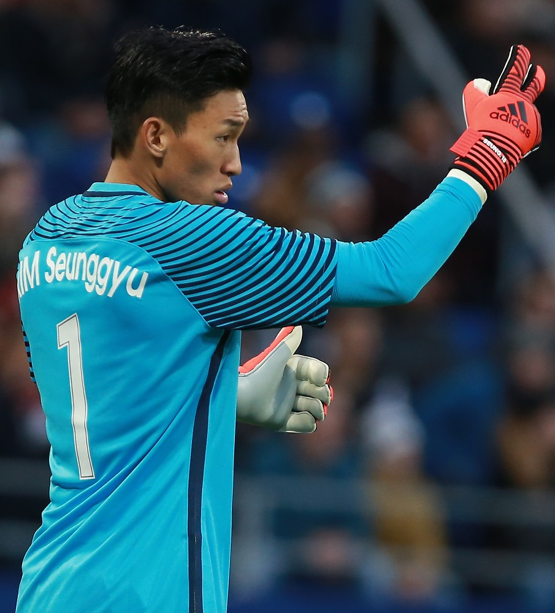

| Kim Seung-gyu |
Portero |
34 |
Kim Seung-gyu (Ulsan, 30 de septiembre de 1990) es portero surcoreano que juega en el Al-Shabab. |
 |
| Kim Min-jae |
Defensa central |
28 |
Kim Min-jae (Tongyeong, 15 de noviembre de 1996) es defensa surcoreano que juega en el Bayern Múnich. |
 |
| Hwang In-beom |
Mediocampista |
28 |
Hwang In-beom (Daejeon, 20 de septiembre de 1996) es mediocampista que juega en el Estrella Roja. |
 |
| Lee Kang-in |
Mediocampista |
23 |
Lee Kang-in (Incheon, 19 de febrero de 2001) es mediocampista surcoreano que juega en el PSG. |
|
| Son Heung-min |
Delantero |
33 |
Son Heung-min (Chuncheon, 8 de julio de 1992) es delantero surcoreano y capitán que juega en el Tottenham Hotspur. |
 |